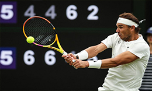

Tenis
Tenis atau bola tampel adalah olahraga yang biasanya dimainkan antara dua pemain atau antara dua pasangan masing-masing dua pemain. Setiap pemain menggunakan raket untuk memukul bola karet. Tujuan permainan adalah memainkan bola dengan cara tertentu sehingga pemain lawan tidak dapat mengembalikan bola tersebut. Tenis adalah salah satu cabang olahraga Olimpiade dan dimainkan pada semua tingkat masyarakat di segala usia. Olahraga ini dapat dimainkan oleh siapa saja, termasuk orang-orang yang menggunakan kursi roda. Permainan tenis modern berasal dari Birmingham, Inggris pada akhir abad ke-19 sebagai "tenis lapangan rumput".Peraturan tenis berubah sedikit sejak 1890-an. Dua perubahan kecil adalah sejak 1908 hingga 1961 pemain yang melakukan service (pukulan pertama) harus menjaga salah satu kakinya tetap di tanah hingga service berpindah dan adopsi sistem tie-break pada 1970-an. Tambahan terakhir yang diterapkan pada tenis profesional adalah teknologi tinjauan ulang elektronik. Tenis dimainkan oleh jutaan orang sebagai olahraga rekreasi dan juga merupakan olahraga tontontan populer di seluruh dunia. Empat kejuaraan tenis terkemuka adalah Australia Terbuka yang dimainkan di lapangan keras, Prancis Terbuka yang dimainkan di lapangan tanah liat, Wimbledon yang dimainkan di lapangan rumput, dan AS Terbuka yang dimainkan juga di lapangan keras. Asal mula pertama tenis masih merupakan perdebatan. Beberapa pendapat meyakini bahwa Mesir, Yunani, dan Romawi kuno telah memainkan suatu permainan yang menjadi cikal bakal tenis. Gambar atau pernyataan mengenai permainan yang menyerupai tenis tersebut belum pernah ditemukan, tetapi beberapa kata bahasa Arab yang berasal dari masa Mesir kuno dinyatakan sebagai bukti. Teori-teori tersebut menyatakan bahwa kata tenis berasal dari nama sebuah kota Mesir, Tinnis, yang terletak di tepi sungai Nil dan kata raket dikembangkan dari kata bahasa Arab untuk telapak tangan, yaitu rahat.[Sebagian besar sejarawan meyakini asal mula tenis adalah permainan kuno yang dimainkan di bagian utara Prancis pada abad ke-12. Permainan itu dilakukan dengan memukul bola menggunakan telapak tangan.